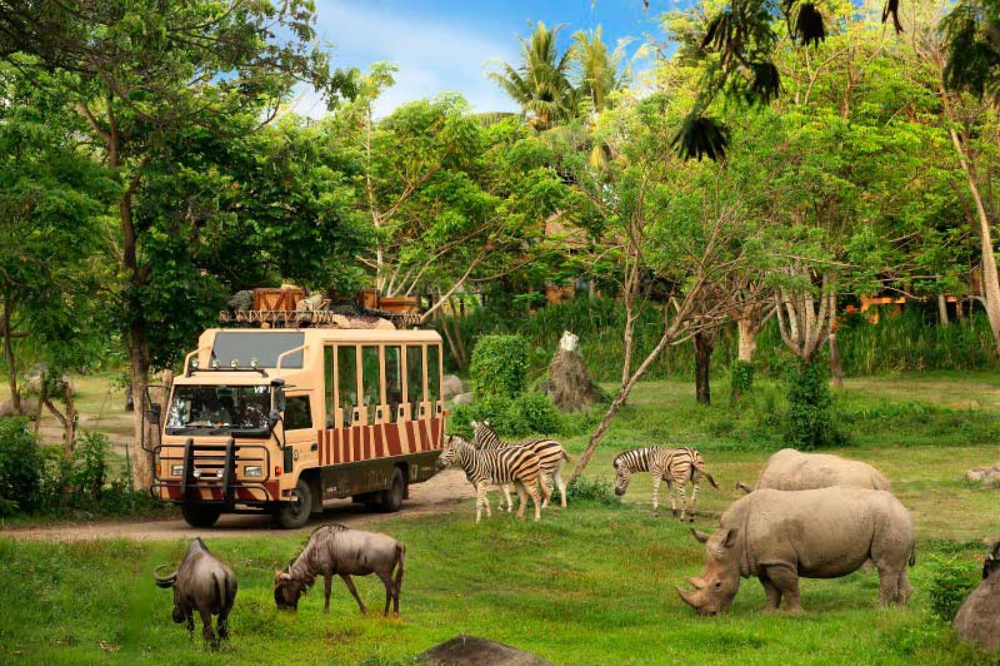
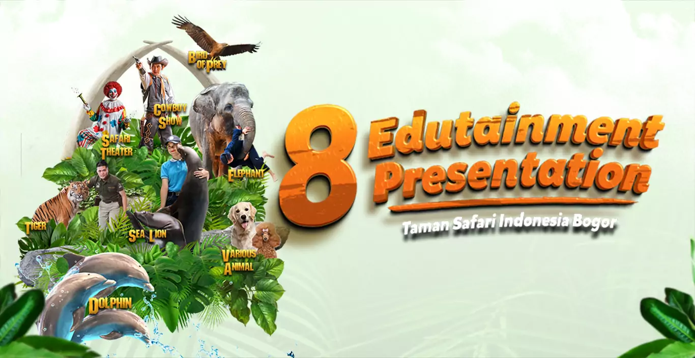
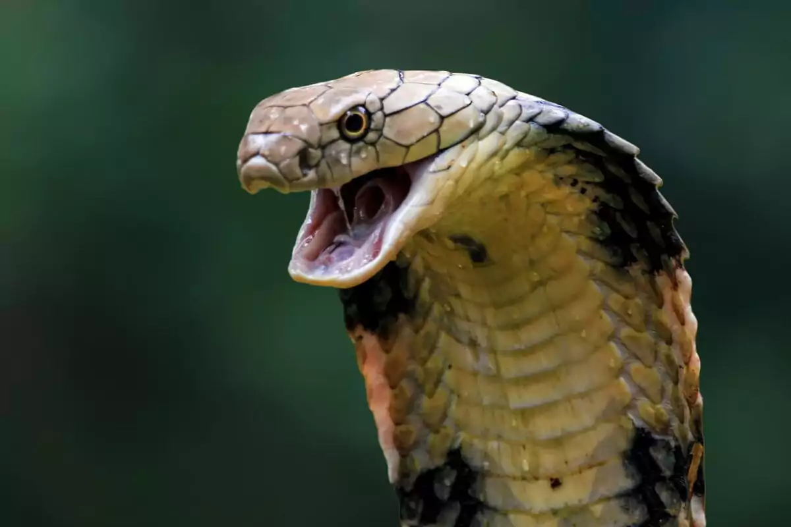
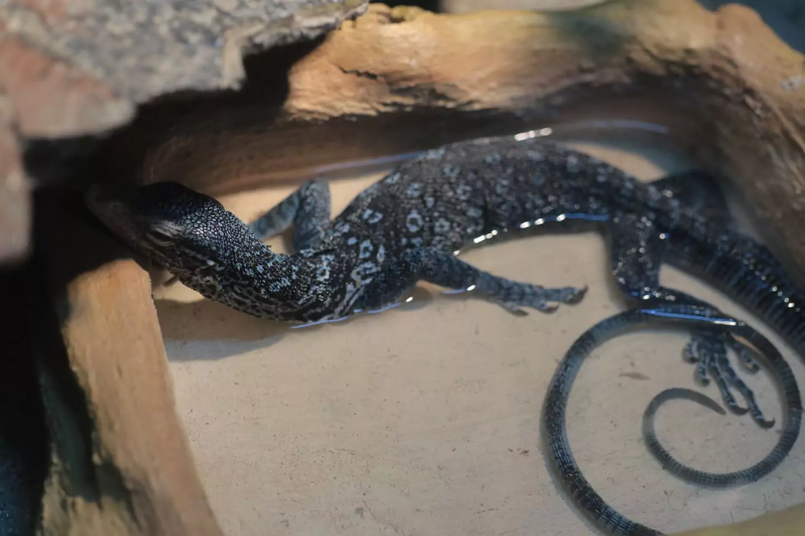
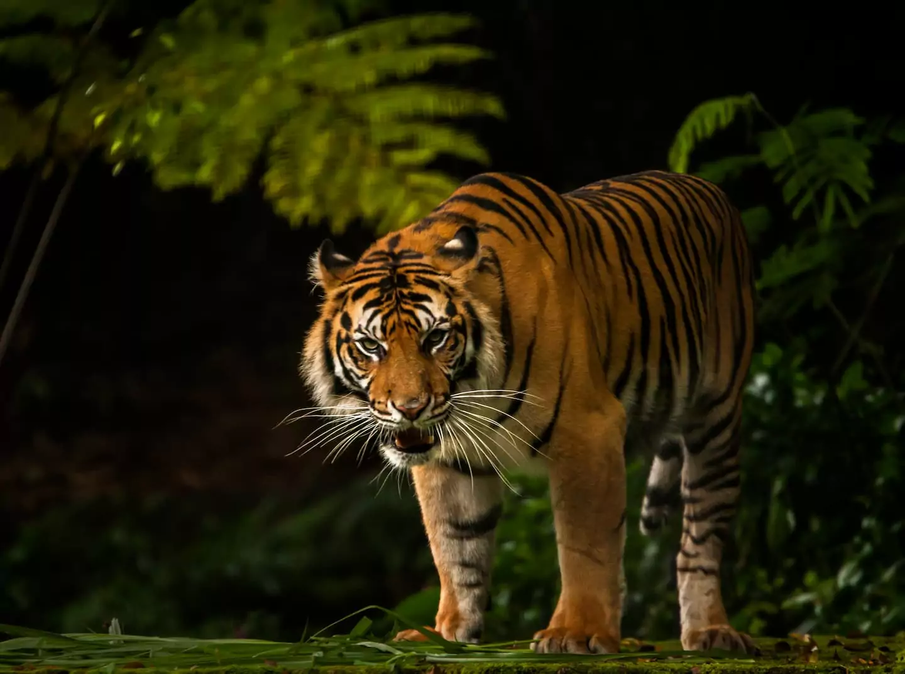
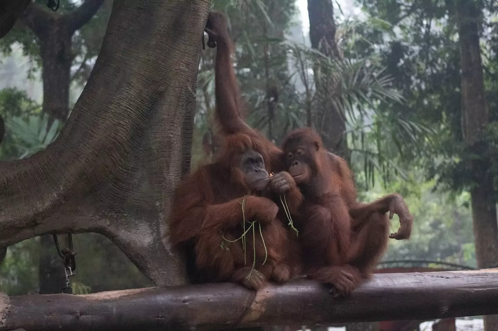

29 Oct 2025–14 Apr 2026 vs. 16 Apr–30 Sep 2026
+110.5%
Impressions
+491.0%
Clicks
Before–After Page Results · Updated 15 April 2026
Wildlife Content &
Page Optimization.
Non-branded keyword research, wildlife articles, and education page improvements.
See My Work, Up Close ↘
Selected Results
Results From the Two Samples Below
29 Oct 2025–14 Apr 2026 vs. 16 Apr–30 Sep 2026
Before–After Page Results · Updated 15 April 2026
20 December 2025–3 January 2026
Four Selected Articles · 1,259,528 Total Impressions
Taman Safari Indonesia brings together wildlife conservation, education, and recreation through its safari parks and visitor experiences.
About Taman Safari ↗Reach readers beyond searches for the Taman Safari brand through animal-related topics, while making key visitor pages clearer and easier to discover.
I selected non-branded wildlife keywords and developed them into content ideas, briefs, and edited articles. On the Bogor education page, I proposed improvements, wrote descriptions, and prepared Event schema.
My Work, Up Close
Education page optimization and wildlife content.

01Written show descriptions and Event schema for the Bogor education page.
Proposed the improvements, wrote the descriptions, and prepared the Event schema.




02Four wildlife articles selected through non-branded keyword research.
Selected the keywords, developed content ideas and briefs, and edited the articles.